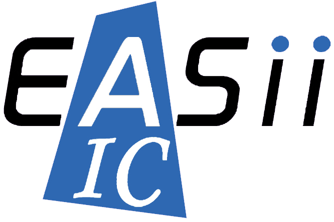
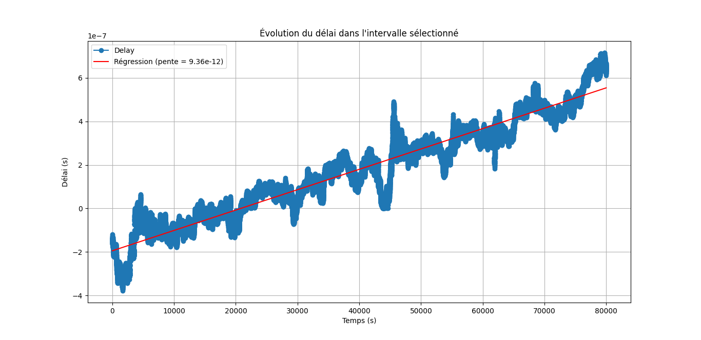

Comprendre.
Intégrer. Valider.
Deux expériences complémentaires : des outils bas niveau pour un contrôleur NFC et l’intégration d’un serveur de temps sous Linux embarqué.
Outils bas niveau & débogage firmware NFC
Développer les outils nécessaires pour configurer, observer et valider le comportement d’un contrôleur NFC à l’interface matériel–logiciel.
Mes contributions
Piloter et automatiser
Développement de drivers d’instrumentation et de tests fonctionnels et de non-régression : pilotage des appareils de laboratoire, acquisition et analyse des mesures.
Configurer les blocs matériels
À partir des spécifications, encodage des champs de registres, génération des configurations binaires et échanges avec le firmware.
Capturer les signaux internes
Développement d’une interface de capture : déclenchements, récupération des buffers RAM, décodage binaire et reconstruction de chronogrammes.
Observer et diagnostiquer
Routage des bus de test vers les GPIO via la NVM pour observer les horloges et les machines à états. Exploitation des captures ADC I/Q et des dumps de registres RF.
Déboguer avec les équipes
Contribution à la résolution d’un blocage au démarrage avec J-Link/SWD, en collaboration avec les équipes firmware et matériel.

Linux embarqué & synchronisation de précision
Réaliser un prototype de serveur de temps, caractériser ses références et intégrer les modules GPS et rubidium sur une cible Linux embarquée.
Mes contributions
Construire le prototype
Développement d’un serveur de temps sous Linux sur ZCU106, avec synchronisation NTP/PTP et échanges avec un autre serveur via Ethernet.
Vérifier les communications
Analyse des trames sous Wireshark pour contrôler les échanges réseau et le comportement de la synchronisation.
Caractériser les références
Mise en place d’un banc RTC, TCXO et rubidium SRO100 : GPS, oscilloscope, compteur de fréquence et acquisition automatisée en Python.
Mesurer la dérive
Mesure d’une dérive du rubidium d’environ 800 ns par jour par rapport à la référence GPS, dans les conditions du banc étudié.
Intégrer sur STM32MP
Intégration des modules GPS et rubidium sous Linux Yocto : adaptation du BSP, configuration du Device Tree, mise au point des interfaces UART/TTL et modification du driver USART pour l’inversion des signaux UART.

Un projet embarqué à construire ?
Disponible immédiatement pour un CDI. Basé à Grenoble, mobile en France.